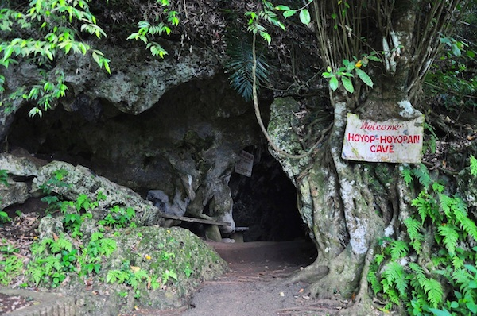
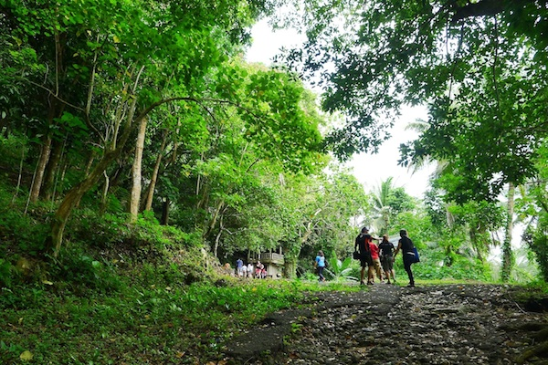
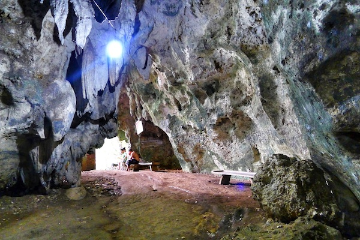

For one, it has been around for a long time at about 3,000 B.C. to 4,000 B.C. The 280 square meter-cave was called Hoyop-hoyopan, a Bicolano term for “blow of the wind.” This huge and windy cave is filled with various shapes of rock formations, where you can use your imagination to formulate different figures inside
Hoyop-Hoyopan is about 25km southwest of Legazpi. Take any jeepney heading towards Camalig, Polangui, Guinobatan or Ligao and get off in Camalig (P20), then hitch a ride on a motorbike (around P150 one way). A tricycle from Daraga should cost P500 each way.